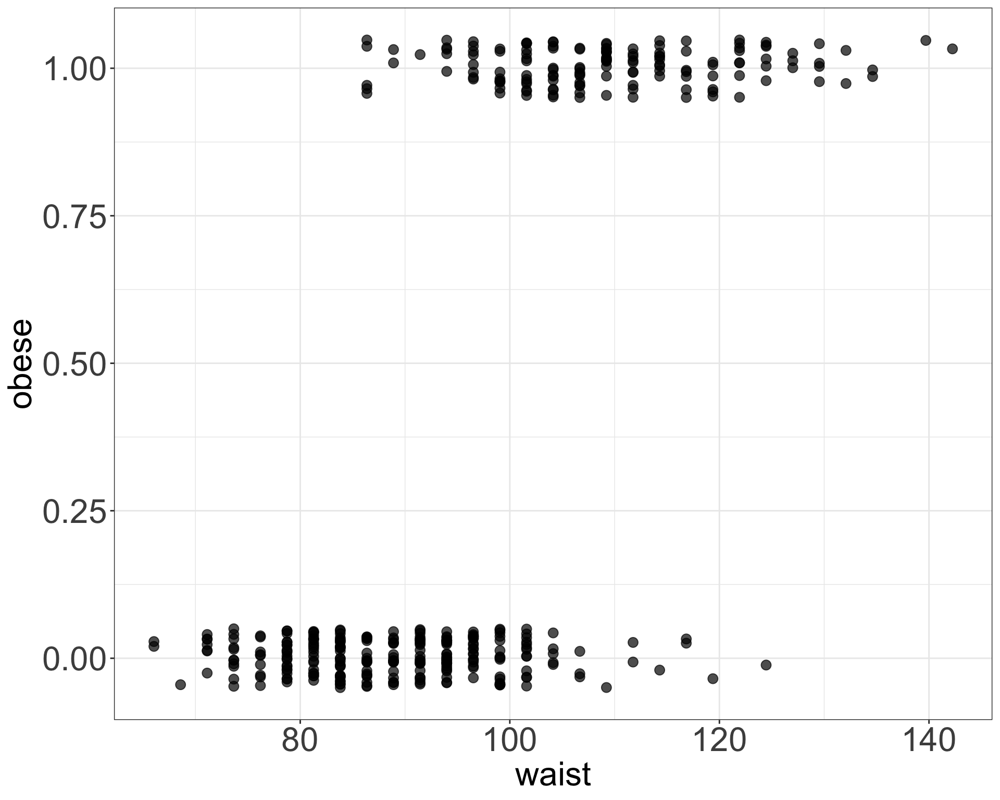
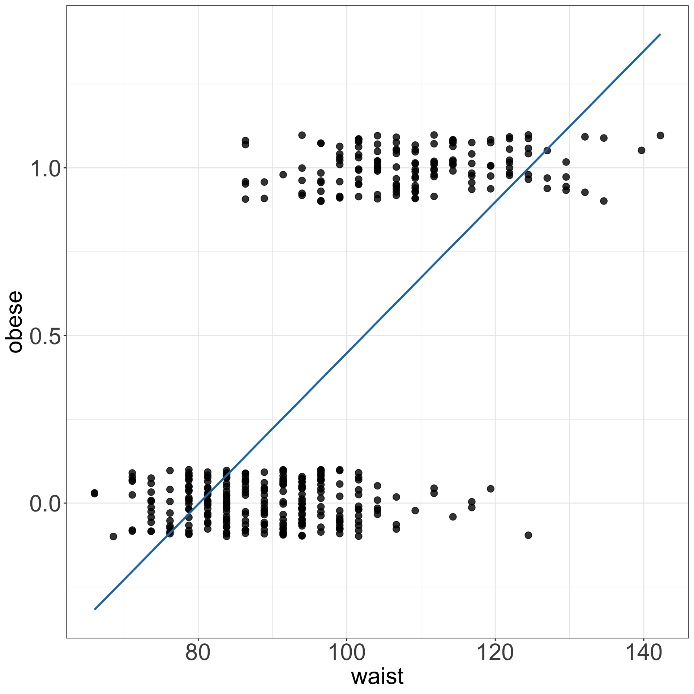
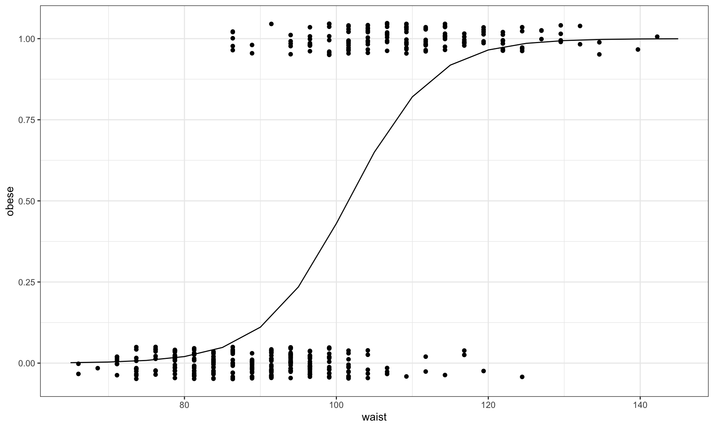

Let’s
In the linear model, we describe the expected value of the outcome:
\[ E(Y_i \mid \mathbf{x}_i) = \beta_0+\beta_1x_{1i}+\cdots+\beta_px_{pi} \]
This works well for many continuous outcomes.
But not all outcomes are continuous.
Examples:
For these outcomes, the expected value has restrictions:
Example

Example of fitting linear model to binary data, to model obesity status coded as 1 (Yes) and 0 (No) with waist variable. Linear model does not fit the data well in this case and the predicted values can take any value, not only 0 and 1.
We keep the same linear predictor:
\[ \eta_i = \beta_0+\beta_1x_{1i}+\cdots+\beta_px_{pi}. \]
But instead of modelling the expected outcome directly, we connect it to the linear predictor through a link function:
\[ g(\mu_i)=\eta_i, \]
where
\[ \mu_i=E(Y_i\mid\mathbf{x}_i). \]
| Outcome | Model | Distribution | Link |
|---|---|---|---|
| Continuous | Linear regression | Normal | identity |
| Binary / proportions | Logistic regression | Binomial | logit |
| Counts | Poisson regression | Poisson | log |
| Positive continuous | Gamma regression | Gamma | log |
Since the response variable takes only two values (Yes/No), we use a logistic regression model to model the probability of being obese (Yes).
Let
\[ p_i = P(Y_i = 1) \]
denote the probability that individual \(i\) is obese.
For a binary response, we assume
\[ Y_i \sim \operatorname{Binomial}(1,p_i), \]
which is equivalent to a Bernoulli distribution.
Logistic regression uses the logit link to relate this probability to the linear predictor:
\[ \log\left(\frac{p_i}{1-p_i}\right) = \beta_0+\beta_1x_i. \]
Equivalently, the probability can be written as
\[ p_i = \frac{\exp(\beta_0+\beta_1x_i)} {1+\exp(\beta_0+\beta_1x_i)}. \]
This ensures that the fitted probabilities always lie between 0 and 1.

R
In R we can use glm() function to fit GLM models:
##
## Call:
## glm(formula = obese ~ waist, family = binomial(link = "logit"),
## data = data_diabetes)
##
## Coefficients:
## Estimate Std. Error z value Pr(>|z|)
## (Intercept) -18.29349 1.83541 -9.967 <2e-16 ***
## waist 0.18013 0.01843 9.774 <2e-16 ***
## ---
## Signif. codes: 0 '***' 0.001 '**' 0.01 '*' 0.05 '.' 0.1 ' ' 1
##
## (Dispersion parameter for binomial family taken to be 1)
##
## Null deviance: 518.24 on 394 degrees of freedom
## Residual deviance: 282.93 on 393 degrees of freedom
## (8 observations deleted due to missingness)
## AIC: 286.93
##
## Number of Fisher Scoring iterations: 6R

Fitted logistic model to diabetes data given the 130 study participants and using waist as explantatory variable to model obesity status.
Hypothesis testing
As in linear regression, we can test whether a predictor is associated with the outcome by testing
\[ H_0:\beta_j=0. \]
The Wald test compares how far the estimated coefficient is from the value specified under the null hypothesis, relative to its standard error: \[W = \frac{\hat\beta-\beta}{e.s.e.(\hat\beta)} \sim N(0,1)\]
Call:
glm(formula = obese ~ waist, family = binomial(link = "logit"),
data = data_diabetes)
Coefficients:
Estimate Std. Error z value Pr(>|z|)
(Intercept) -18.29349 1.83541 -9.967 <2e-16 ***
waist 0.18013 0.01843 9.774 <2e-16 ***
---
Signif. codes: 0 '***' 0.001 '**' 0.01 '*' 0.05 '.' 0.1 ' ' 1
(Dispersion parameter for binomial family taken to be 1)
Null deviance: 518.24 on 394 degrees of freedom
Residual deviance: 282.93 on 393 degrees of freedom
(8 observations deleted due to missingness)
AIC: 286.93
Number of Fisher Scoring iterations: 6Deviance (rather than R^2)
Deviance measures how well a model fits the observed data relative to a perfectly fitting (saturated) model. Smaller deviance indicates better fit.
Deviance can also be used to compare nested models, for example to test whether adding an explanatory variable improves the model.
In a likelihood ratio test, the test statistic is the difference in deviance between the reduced and full models:
\[ \Delta D = D_{\text{reduced}} - D_{\text{full}}. \]
Under the null hypothesis,
\[ \Delta D \approx \chi^2_{df}, \]
where \(df\) is the difference in the number of estimated parameters between the two models.
Odds ratio
In logistic regression, we often interpret coefficients by exponentiating them:
\[ OR = e^{\hat{\beta}}. \]
This gives an odds ratio.
For example, if \(\hat{\beta}=0.18\),
\[ e^{0.18}\approx1.2. \]
This means that for each one-unit increase in waist, the odds of obesity are multiplied by about 1.2.
Call:
glm(formula = obese ~ waist, family = binomial(link = "logit"),
data = data_diabetes)
Coefficients:
Estimate Std. Error z value Pr(>|z|)
(Intercept) -18.29349 1.83541 -9.967 <2e-16 ***
waist 0.18013 0.01843 9.774 <2e-16 ***
---
Signif. codes: 0 '***' 0.001 '**' 0.01 '*' 0.05 '.' 0.1 ' ' 1
(Dispersion parameter for binomial family taken to be 1)
Null deviance: 518.24 on 394 degrees of freedom
Residual deviance: 282.93 on 393 degrees of freedom
(8 observations deleted due to missingness)
AIC: 286.93
Number of Fisher Scoring iterations: 6Statistical Methods for Life Sciences